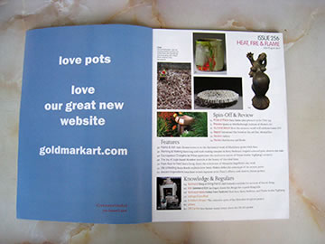
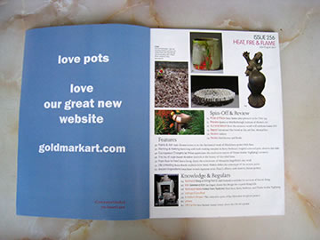

― これまでのイベント（記録） ―
 

|


|
このたび、英国の陶芸誌「CERAMIC REVIEW」７・８月号に猪風来とその作品が４ページにわたり
紹介されました。
題名は [Ancient Inspirations]（いにしえのインスピレーション）
記事を執筆したのは英国セインズベリー日本藝術研究所のサイモン・ケイナー博士。
ケイナー博士は2010年の英国 Unearthed 展のスペシャルワークショップに猪風来を招待し、その後
猪風来美術館に来館し猪風来の代表作に触れ、『現代の縄文アーティスト』として称賛しています。
本文より抜粋（翻訳）
=∴=∵=∴=∵=∴=∵=∴=∵=∴=∵=∴=∵=∴=∵=∴=∵=∴=∵=∴=∵=∴=∵=∴=∵=∴=∵=∴=
日本列島で最も広い本州西部の山間部に、旧小学校を利用した猪風来美術館があります。６５才の“猪風来”
は、漢字で猪が向かってくることによって巻き起こる風を意味しており、“縄文アーティスト”としての彼自身
を表わしています。大昔の日本の縄文時代には、猪、鹿、木の実のような野生の食べ物を糧としていた人々が、
いにしえの世界のもっとも優れた焼物を創造していました。彼はそんな縄文時代の焼物に触発され、驚くほど
美しい陶芸作品を創造します。
（中略）
1990年代後半から、彼は出産、縄文の女神やビーナスの概念、渦巻きや立体的で流れるような柔軟性のあ
る縄文のモチーフ、石が立っているような像、そして縄文の世界観（コスモロジー）、夜に猪風来美術館から
はっきり望むことのできる銀河のような天体に象徴される自然に抱かれ、さまざまなものに触発されながら作
品の展示を始めました。
（中略）
縄文にインスパイアされた野焼きと、窯で焼き上げられた陶器とのコンビネーションは、猪風来と日本のこ
の地域を、炎と焼物の新たな拠点として位置づけることとなったのです。
=∴=∵=∴=∵=∴=∵=∴=∵=∴=∵=∴=∵=∴=∵=∴=∵=∴=∵=∴=∵=∴=∵=∴=∵=∴=∵=∴=
目次の確認やご購入は、公式サイトより参照ください。
→ Ceramic Review Magazine (英語)